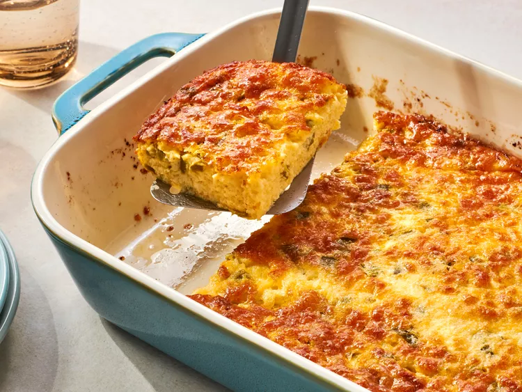

Huevos Rancheros Casserole
Grant's mom has been making this breakfast casserole for years, and it didn't take long for Magda to fall in love with it too. Cheesy, comforting, and perfect for a family breakfast.

Ingredients
| ✓ | Ingredient | Amount |
|---|---|---|
| Eggs | 5 large | |
| Jack cheese | 8 oz | |
| Cottage cheese | 1 cup | |
| Butter, melted | 1/4 cup | |
| Flour | 1/4 cup | |
| Baking powder | 1/2 tsp | |
| Salt | 1/4 tsp | |
| Diced green chile | 4 oz |
Instructions
- Beat the eggs.
- Add the cottage cheese and melted butter.
- Stir in the flour, baking powder, and salt.
- Add the Jack cheese and diced green chile.
- Mix well and pour into a heavily greased baking pan.
- Bake at 350°F for 35 minutes.
Tips & Notes
Feeding a crowd? Double the recipe to serve 8 and bake it in a 9 × 13-inch pan.